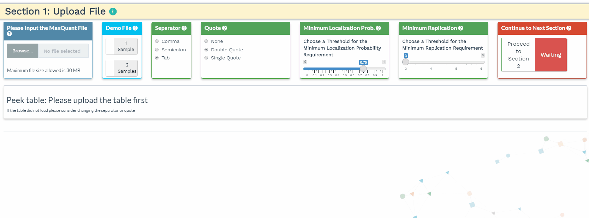
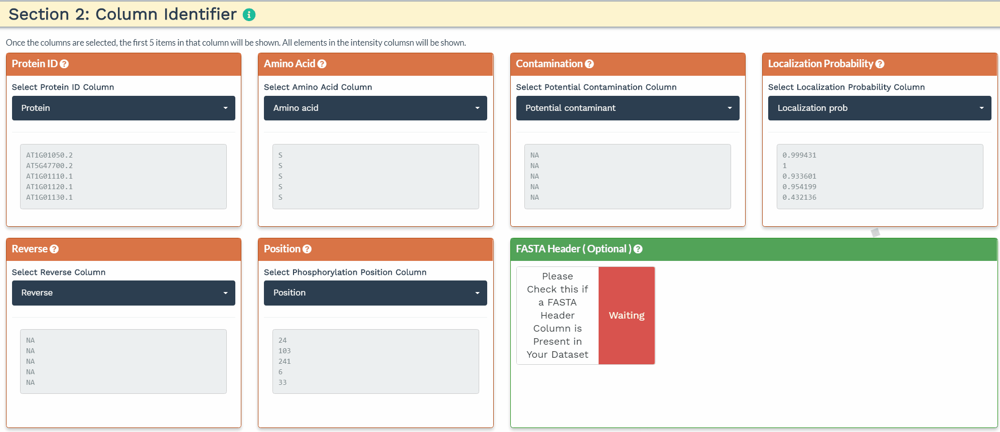

Step 1 Panel is designed for the user to upload raw label-free phosphoproteome data correctly. Step 1 contains three sections, where the user will choose the thresholds for performing quality controls and filtering the data, and identify the correct columns to allow the Shiny application to extract information. Step 1 includes the following sections:
- Section 1: Upload File
- Section 2: Column Identifier
- Section 3: Selected Columns (Full Table)
Section 1. Upload File
- The user will load their data to the upload panel on the left. Once the data is loaded, please use the separator and quote to accurately identify the format of the file. If the data are loaded correctly, the first 3 rows and the first 5 columns will be shown in the Peek table.

Section 2: Column Identifier
The second section is designed to choose the correct columns needed for data processing. For each of the selected variable columns, the first 5 items are shown. Please make sure to correctly identify the corresponding columns. All orange panels are required information, while the green panel to include a FASTA Header column is optional (see below). 
To accurately process the data and perform the correct statistical analysis, the user is required to add three variables within the intensity column names: a condition, time, and replicate variable separated by the underscore (’_‘) delimiter. The application will identify the three variables when the user provides the terms ’CON’, ‘TIME’, and ‘REP’ separated by an underscore in the correct order in the blue panels. Additionally, the user can further filter the variables by de-selecting them.